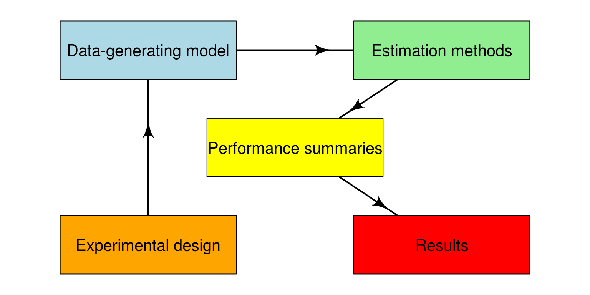

Chapter 2 Structure of a simulation study
2.1 Structure of a simulation study
We can think of simulation studies as involving five distinct pieces, as illustrated in the diagram below.

2.1.1 Experimental design
Simulation studies closely resemble designed experiments, in which factors such as sample size and true parameter values are systematically varied. Typically, simulation studies follow a full factorial design, in which each level of a factor is crossed with every other level. (We will look further at this aspect of simulation design in a later class.) The experimental design consists of sets of parameter values (including design parameters, such as sample sizes) that will be considered in the study.
2.1.2 Data-generating model
The data-generating model takes a set of parameter values as input and generates a set of simulated data as output.
2.1.3 Estimation methods
The estimation methods consist of the set of statistical procedures under examination. Each method takes a simulated dataset and produces a set of estimates or results (i.e., point estimates, standard errors, confidence intervals, p-values, etc.).
2.1.4 Performance summaries
Performance summaries are the metrics used to assess the performance of a statistical method. Interest usually centers on understanding the performance of a method over repeated samples from a data-generating process. Thus, we will need to repeat steps 2 and 3 many times to get a large number of simulated estimates. We then summarize the distribution of the estimates to characterize performance of a method.
2.1.5 Results
Simulation results consist of sets of performance metrics for every combination of parameter values in the experimental design. Thus, steps 2 through 4 will need to get repeated a bunch.
2.2 Modular simulations
In writing R code to implement all these calculations, we will follow a modular approach, in which each component of the simulation is implemented as a separate function (or potentially a set of several functions). Writing separate functions for the different components of the simulation will make the code easier to read, test, and debug. Furthermore, it makes it possible to swap components of the simulation in or out, such as by adding additional estimation methods or trying out a data-generating model that involves different distributional assumptions.
2.3 A first example: Heteroskedasticity ANOVA
To illustrate the process of programming a simulation, let’s look at the simulations from Brown and Forsythe (1974). These authors study methods for testing hypotheses in the following model. Consider a population consisting of \(g\) separate groups, with population means \(\mu_1,...,\mu_g\) and population variances \(\sigma_1^2,...,\sigma_g^2\) for some characteristic \(X\). We obtain samples of size \(n_1,...,n_g\) from each of the groups, and take measurements of the characteristic for each unit in each group. Let \(x_{ij}\) denote the measurement from unit \(j\) in group \(i\), for \(i = 1,...,g\) and \(j = 1,...,n_i\). Our goal is to use the sample data to test the hypothesis that the population means are all equal, i.e., \[ H_0: \mu_1 = \mu_2 = \cdots = \mu_g. \] Note that if the population variances were all equal (i.e., \(\sigma_1^2 = \sigma_2^2 = \cdots = \sigma_g^2\)), we could use a conventional one-way analysis of variance to test the hypothesis. However, one-way ANOVA might not work well if the variances are not equal.
Brown and Forsythe evaluated two different hypothesis testing procedures, developed by James (1951) and Welch (1951), that had been proposed for testing this hypothesis without assuming equality of variances, as well as the conventional one-way ANOVA F-test as a benchmark. They also proposed and evaluated a new procedure of their own devising. The simulation involves comparing the performance of these different hypothesis testing procedures under a range of conditions.
The main performance metrics of interest were the type-I error rate (i.e., when the null hypothesis is true, how often does each test falsely reject the null?) and power (how often does the test correctly reject the null when it is indeed false?) of each test, for nominal \(\alpha\)-levels of 1%, 5%, and 10%. Table 1 of the paper reports the simulation results for type-I error (labeled as “size”); ideally, a test should have true type-I error very close to the nominal \(\alpha\). Table 2 reports results on power; it is desirable to have higher power to reject null hypotheses that are false, so higher rates are better here.
2.3.1 Data-generating model
In the heteroskedastic one-way ANOVA simulation, there are three sets of parameter values: population means, population variances, and sample sizes. Rather than attempting to write a data-generating function immediately, it is often easier to write code for a specific case first. For example, say that we have four groups with means of 1, 2, 5, 6; variances of 3, 2, 5, 1; and sample sizes of 3, 6, 2, and 4:
mu <- c(1, 2, 5, 6)
sigma_sq <- c(3, 2, 5, 1)
sample_size <- c(3, 6, 2, 4)Following Brown and Forsythe, we’ll assume that the measurements are normally distributed within each sub-group of the population. The following code generates a vector of group id’s and a vector of simulated measurements:
N <- sum(sample_size) # total sample size
g <- length(sample_size) # number of groups
group <- rep(1:g, times = sample_size) # group id
mu_long <- rep(mu, times = sample_size) # mean for each unit of the sample
sigma_long <- rep(sqrt(sigma_sq), times = sample_size) # sd for each unit of the sample
cbind(group, mu_long, sigma_long)## group mu_long sigma_long
## [1,] 1 1 1.732051
## [2,] 1 1 1.732051
## [3,] 1 1 1.732051
## [4,] 2 2 1.414214
## [5,] 2 2 1.414214
## [6,] 2 2 1.414214
## [7,] 2 2 1.414214
## [8,] 2 2 1.414214
## [9,] 2 2 1.414214
## [10,] 3 5 2.236068
## [11,] 3 5 2.236068
## [12,] 4 6 1.000000
## [13,] 4 6 1.000000
## [14,] 4 6 1.000000
## [15,] 4 6 1.000000x <- rnorm(N, mean = mu_long, sd = sigma_long)
data.frame(group = group, x = x)## group x
## 1 1 1.4569509
## 2 1 1.8657055
## 3 1 6.1127756
## 4 2 3.5155790
## 5 2 0.5518942
## 6 2 1.2912097
## 7 2 3.9899722
## 8 2 1.2078286
## 9 2 0.9297065
## 10 3 3.8267430
## 11 3 7.6545071
## 12 4 6.2541702
## 13 4 6.2357265
## 14 4 5.2957663
## 15 4 4.1019719Now wrap this code in a function:
generate_data <- function(mu, sigma_sq, sample_size) {
N <- sum(sample_size)
g <- length(sample_size)
group <- rep(1:g, times = sample_size)
mu_long <- rep(mu, times = sample_size)
sigma_long <- rep(sqrt(sigma_sq), times = sample_size)
x <- rnorm(N, mean = mu_long, sd = sigma_long)
sim_data <- data.frame(group = group, x = x)
return(sim_data)
}
generate_data(mu = mu, sigma_sq = sigma_sq, sample_size = sample_size)## group x
## 1 1 0.65565606
## 2 1 2.23666489
## 3 1 0.70417639
## 4 2 3.48320606
## 5 2 0.02547002
## 6 2 1.49174544
## 7 2 1.89224628
## 8 2 3.22003988
## 9 2 3.77830719
## 10 3 3.78515727
## 11 3 4.86079682
## 12 4 6.26425555
## 13 4 6.00298315
## 14 4 4.75793372
## 15 4 4.82867843Re-run the function and we get a new set of simulated data:
generate_data(mu = mu, sigma_sq = sigma_sq, sample_size = sample_size)## group x
## 1 1 0.06119595
## 2 1 -0.03831476
## 3 1 -0.39663967
## 4 2 4.33522948
## 5 2 3.94349778
## 6 2 0.63092115
## 7 2 1.35245824
## 8 2 5.55185218
## 9 2 0.25688449
## 10 3 5.89729532
## 11 3 5.90541772
## 12 4 5.02206136
## 13 4 6.65838548
## 14 4 6.66282749
## 15 4 5.465076902.3.2 Estimation procedures
Brown and Forsythe considered four different hypothesis testing procedures for heteroskedastic ANOVA. For starters, let’s look at the simplest one, which is just to use a conventional one-way ANOVA (while mistakenly assuming homoskedasticity). The oneway.test function will calculate this test automatically:
sim_data <- generate_data(mu = mu, sigma_sq = sigma_sq, sample_size = sample_size)
oneway.test(x ~ factor(group), data = sim_data, var.equal = TRUE)##
## One-way analysis of means
##
## data: x and factor(group)
## F = 8.2269, num df = 3, denom df = 11, p-value = 0.00375The main result we need here is the p-value, which will let us assess the test’s Type-I error and power for a given nominal \(\alpha\)-level. The following function takes simulated data as input and returns as output the p-value from a one-way ANOVA:
ANOVA_F_aov <- function(sim_data) {
oneway_anova <- oneway.test(x ~ factor(group), data = sim_data, var.equal = TRUE)
return(oneway_anova$p.value)
}
ANOVA_F_aov(sim_data)## [1] 0.003750123An alternative approach would be to program the ANOVA F statistic and test directly. Following the formulas on p. 129 of Brown and Forsythe (1974):
ANOVA_F_direct <- function(sim_data) {
x_bar <- with(sim_data, tapply(x, group, mean))
s_sq <- with(sim_data, tapply(x, group, var))
n <- table(sim_data$group)
g <- length(x_bar)
df1 <- g - 1
df2 <- sum(n) - g
msbtw <- sum(n * (x_bar - mean(sim_data$x))^2) / df1
mswn <- sum((n - 1) * s_sq) / df2
fstat <- msbtw / mswn
pval <- pf(fstat, df1, df2, lower.tail = FALSE)
return(pval)
}
ANOVA_F_direct(sim_data)## [1] 0.003750123This approach takes more work to program, but will end up being quicker to compute.
Now let’s consider another one of the tests considered by Brown and Forsythe. Here is a function that calculates the Welch test, again following the notation and formulas from the paper:
Welch_F <- function(sim_data) {
x_bar <- with(sim_data, tapply(x, group, mean))
s_sq <- with(sim_data, tapply(x, group, var))
n <- table(sim_data$group)
g <- length(x_bar)
w <- n / s_sq
u <- sum(w)
x_tilde <- sum(w * x_bar) / u
msbtw <- sum(w * (x_bar - x_tilde)^2) / (g - 1)
G <- sum((1 - w / u)^2 / (n - 1))
denom <- 1 + G * 2 * (g - 2) / (g^2 - 1)
W <- msbtw / denom
f <- (g^2 - 1) / (3 * G)
pval <- pf(W, df1 = g - 1, df2 = f, lower.tail = FALSE)
return(pval)
}
Welch_F(sim_data)## [1] 0.048120332.3.3 Replicate
We now have functions that implement steps 2 and 3 of the simulation. Starting with the parameters, generate_data produces a simulated dataset and ANOVA_F and Welch_F use the simulated data to calculate p-values. To evaluate the accuracy of these tests, we now need to repeat this chain of calculations a bunch of times.
R includes a function called replicate that will be very handy as we design and implement simulations. The function does what its name suggests—it replicates the result of an expression a specified number of times. The first argument is the number of times to replicate and the next argument is an expression (a short piece of code to run). A further argument, simplify allows you to control how the results are structured. Setting simplify = FALSE returns the output as a list. The following code produces 4 replications of the simulated dataset:
sim_data <- replicate(n = 4,
generate_data(mu = mu, sigma_sq = sigma_sq, sample_size = sample_size),
simplify = FALSE)
str(sim_data)## List of 4
## $ :'data.frame': 15 obs. of 2 variables:
## ..$ group: int [1:15] 1 1 1 2 2 2 2 2 2 3 ...
## ..$ x : num [1:15] 0.406 0.847 0.783 2.9 -0.316 ...
## $ :'data.frame': 15 obs. of 2 variables:
## ..$ group: int [1:15] 1 1 1 2 2 2 2 2 2 3 ...
## ..$ x : num [1:15] 1.44 2.78 2.83 1.85 3.45 ...
## $ :'data.frame': 15 obs. of 2 variables:
## ..$ group: int [1:15] 1 1 1 2 2 2 2 2 2 3 ...
## ..$ x : num [1:15] -1.102 3.383 -0.477 3.551 0.843 ...
## $ :'data.frame': 15 obs. of 2 variables:
## ..$ group: int [1:15] 1 1 1 2 2 2 2 2 2 3 ...
## ..$ x : num [1:15] 0.00649 -0.30408 -0.05318 1.88246 -1.61874 ...You can put multiple lines of code in the expression by enclosing them in curly brackets ({}). The following code produces 4 replications of the test statistics and p-value from Welch’s test:
replicate(n = 4, {
sim_data <- generate_data(mu = mu, sigma_sq = sigma_sq, sample_size = sample_size)
Welch_F(sim_data)
}, simplify = FALSE)## [[1]]
## [1] 0.005331825
##
## [[2]]
## [1] 0.00762545
##
## [[3]]
## [1] 0.01033648
##
## [[4]]
## [1] 0.01494348However, we need to get results from the ANOVA F-test as well. Let’s add that in and just return a data frame with p-values:
replicate(n = 4, {
sim_data <- generate_data(mu = mu, sigma_sq = sigma_sq, sample_size = sample_size)
anova_p <- ANOVA_F_direct(sim_data)
Welch_p <- Welch_F(sim_data)
data.frame(ANOVA = anova_p, Welch = Welch_p)
}, simplify = FALSE)## [[1]]
## ANOVA Welch
## 1 0.005899011 0.002950512
##
## [[2]]
## ANOVA Welch
## 1 0.004484139 0.06095662
##
## [[3]]
## ANOVA Welch
## 1 3.061617e-05 0.001430781
##
## [[4]]
## ANOVA Welch
## 1 0.0008833064 0.002085712The bind_rows function from the dplyr package will turn this list into a data frame, for easier manipulation:
library(dplyr)
p_vals <- replicate(n = 4, {
sim_data <- generate_data(mu = mu, sigma_sq = sigma_sq, sample_size = sample_size)
anova_p <- ANOVA_F_direct(sim_data)
Welch_p <- Welch_F(sim_data)
data.frame(ANOVA = anova_p, Welch = Welch_p)
}, simplify = FALSE)
bind_rows(p_vals)## ANOVA Welch
## 1 0.000257279 0.017399416
## 2 0.001219803 0.046248023
## 3 0.002564235 0.009556034
## 4 0.003211766 0.016397965Voila! Simulated p-values!
2.3.4 Calculating rejection rates
We’ve got all the pieces in place now to reproduce the results from Brown and Forsythe (1974). Let’s focus on calculating the actual type-I error rate of these tests—that is, the proportion of the time that they reject the null hypothesis of equal means when that null is actually true—for an \(\alpha\)-level of .05. We therefore need to simulate data according to process where the population means are indeed all equal. Arbitrarily, let’s look at \(g = 4\) groups and set all of the means equal to zero:
mu <- rep(0, 4)In the fifth row of Table 1, they examine performance for the following parameter values for sample size and population variance:
sample_size <- c(4, 8, 10, 12)
sigma_sq <- c(3, 2, 2, 1)^2With these parameter values, we can use our replicate code to simulate 10,000 p-values:
p_vals <- replicate(n = 10000, {
sim_data <- generate_data(mu = mu, sigma_sq = sigma_sq, sample_size = sample_size)
anova_p <- ANOVA_F_direct(sim_data)
Welch_p <- Welch_F(sim_data)
data.frame(ANOVA = anova_p, Welch = Welch_p)
}, simplify = FALSE)
p_vals <- bind_rows(p_vals)
head(p_vals)## ANOVA Welch
## 1 0.99476744 0.9992267308
## 2 0.99414068 0.9858152767
## 3 0.29221999 0.0002463917
## 4 0.01787802 0.3668788970
## 5 0.73786533 0.7771801291
## 6 0.08392008 0.2533794317Now how to calculate the rejection rates? The rule is that the null is rejected if the p-value is less than \(\alpha\). To get the rejection rate, calculate the proportion of replications where the null is rejected. This is equivalent to taking the mean of the logical conditions:
mean(p_vals$ANOVA < .05)## [1] 0.1436We get a rejection rate that is much larger than \(\alpha = .05\), which indicates that the ANOVA F-test does not adequately control Type-I error under this set of conditions.
mean(p_vals$Welch < .05)## [1] 0.0676The Welch test does much better, although it is still a little bit in excess of .05.
Note that these two numbers are quite close (though not quite identical) to the corresponding entries in Table 1 of Brown and Forsythe (1974). The difference is due to the fact that both Table 1 and are results are actually estimated rejection rates, because we haven’t actually simulated an infinite number of replications. The estimation error arising from using a finite number of replications is called simulation error (or Monte Carlo error). In a later class, we’ll look more at how to estimate and control the simulation error in our studies.
2.4 Exercises
The following exercises involve exploring and tweaking the simulation code we’ve developed to replicate the results of Brown and Forsythe (1974). Here are the key functions for the data-generating process and estimation procedures:
generate_data <- function(mu, sigma_sq, sample_size) {
N <- sum(sample_size)
g <- length(sample_size)
group <- rep(1:g, times = sample_size)
mu_long <- rep(mu, times = sample_size)
sigma_long <- rep(sqrt(sigma_sq), times = sample_size)
x <- rnorm(N, mean = mu_long, sd = sigma_long)
sim_data <- data.frame(group = group, x = x)
return(sim_data)
}
summarize_data <- function(sim_data) {
x_bar <- with(sim_data, tapply(x, group, mean))
s_sq <- with(sim_data, tapply(x, group, var))
n <- table(sim_data$group)
g <- length(x_bar)
return(list(x_bar = x_bar, s_sq = s_sq, n = n, g = g))
}
ANOVA_F <- function(x_bar, s_sq, n, g) {
df1 <- g - 1
df2 <- sum(n) - g
msbtw <- sum(n * (x_bar - weighted.mean(x_bar, w = n))^2) / df1
mswn <- sum((n - 1) * s_sq) / df2
fstat <- msbtw / mswn
pval <- pf(fstat, df1, df2, lower.tail = FALSE)
return(pval)
}
Welch_F <- function(x_bar, s_sq, n, g) {
w <- n / s_sq
u <- sum(w)
x_tilde <- sum(w * x_bar) / u
msbtw <- sum(w * (x_bar - x_tilde)^2) / (g - 1)
G <- sum((1 - w / u)^2 / (n - 1))
denom <- 1 + G * 2 * (g - 2) / (g^2 - 1)
W <- msbtw / denom
f <- (g^2 - 1) / (3 * G)
pval <- pf(W, df1 = g - 1, df2 = f, lower.tail = FALSE)
return(data.frame(W = W, f = f, pval = pval))
}- Table 1 from Brown and Forsythe reported rejection rates for \(\alpha = .01\) and \(\alpha = .10\) in addition to \(\alpha = .05\). Calculate the rejection rates of the ANOVA F and Welch tests for all three \(\alpha\)-levels. Use the dataset of p-values calculated in the Class 12 notes, which is loaded below.
head(p_vals)## ANOVA Welch
## 1 0.99476744 0.9992267308
## 2 0.99414068 0.9858152767
## 3 0.29221999 0.0002463917
## 4 0.01787802 0.3668788970
## 5 0.73786533 0.7771801291
## 6 0.08392008 0.2533794317Try simulating the Type-I error rates for a the parameter values in the first two rows of Table 1. Use 10,000 replications. How do your results compare to the results reported in the Table?
Try simulating the power levels for a couple of sets of parameter values from Table 2. Use 10,000 replications. How do your results compare to the results reported in the Table?